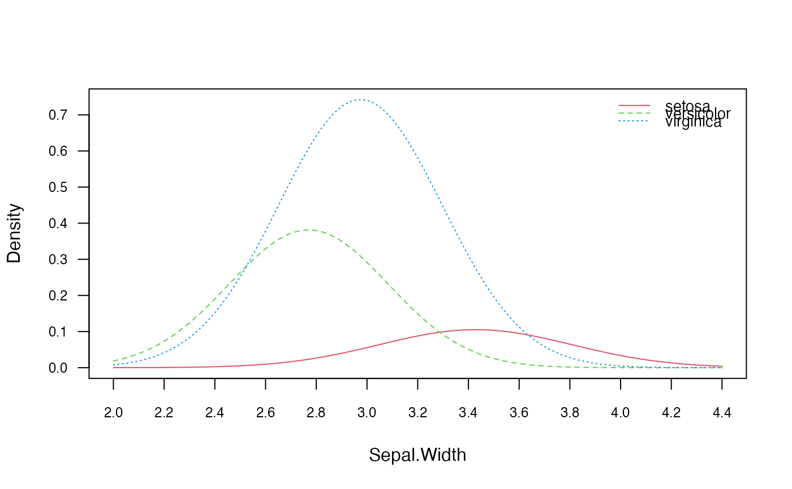
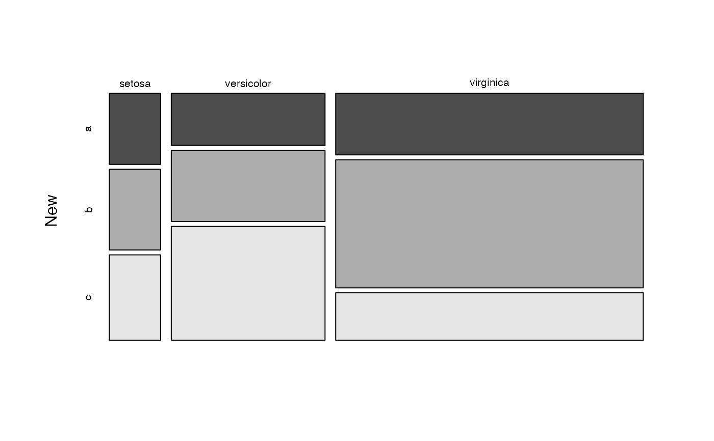
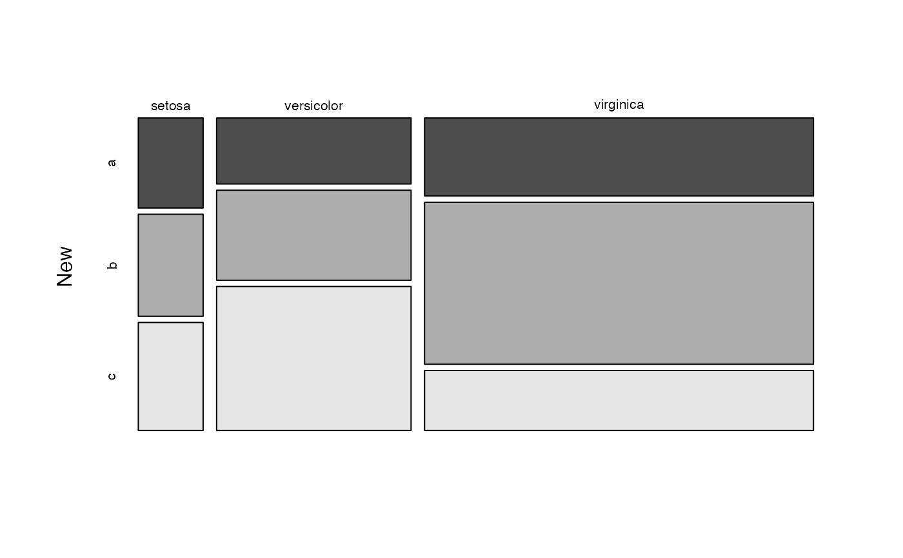

Plot Method for naive_bayes Objects
plot.naive_bayes.RdPlot method for objects of class "naive_bayes" designed for a quick look at the class marginal distributions or class conditional distributions of predictor variables.
Arguments
- x
object of class inheriting from
"naive_bayes".- which
variables to be plotted (all by default). This can be any valid indexing vector or vector containing names of variables.
- ask
logical; if
TRUE, the user is asked before each plot, seepar(ask=.).- legend
logical; if
TRUEalegendwill be be plotted.- legend.box
logical; if
TRUEa box will be drawn around the legend.- arg.num
other parameters to be passed as a named list to
matplot.- arg.cat
other parameters to be passed as a named list to
mosaicplot.- prob
character; if "marginal" then marginal distributions of predictor variables for each class are visualised and if "conditional" then the class conditional distributions of predictor variables are depicted. By default, prob="marginal".
- ...
not used.
Details
Probabilities are visualised by matplot (for numeric (metric) predictors) and mosaicplot (for categorical predictors). In case of non parametric estimation of densities, the bandwidths are reported for each class. Nothing is returned. For numeric (metric) predictors position of the legend can be adjusted changed via arg.num(..., legend.position = "topright"). legend.position can be one of "topright" "topleft", "bottomright", "bottomleft". In order to adjust the legend size following argument can be used: arg.num(..., legend.cex = 0.9).
The parameter prob controls the kind of probabilities to be visualized for each individual predictor \(Xi\). It can take on two values:
"marginal": \(P(Xi|class) * P(class)\)
"conditional": \(P(Xi|class)\)
Author
Michal Majka, michalmajka@hotmail.com
Examples
data(iris)
iris2 <- cbind(iris, New = sample(letters[1:3], 150, TRUE))
# Fit the model with custom prior probabilities
nb <- naive_bayes(Species ~ ., data = iris2, prior = c(0.1, 0.3, 0.6))
# Visualize marginal distributions of two predictors
plot(nb, which = c("Sepal.Width", "Sepal.Length"), ask = TRUE)

# Visualize class conditional distributions corresponding to the first predictor
# with customized settings
plot(nb, which = 1, ask = FALSE, prob = "conditional",
arg.num = list(col = 1:3, lty = 1,
main = "Naive Bayes Plot", legend.position = "topright",
legend.cex = 0.55))
 # Visualize class marginal distributions corresponding to the first predictor
# with customized settings
plot(nb, which = 1, ask = FALSE, prob = "marginal",
arg.num = list(col = 1:3, lty = 1,
main = "Naive Bayes Plot", legend.position = "topright",
legend.cex = 0.55))
# Visualize class marginal distributions corresponding to the first predictor
# with customized settings
plot(nb, which = 1, ask = FALSE, prob = "marginal",
arg.num = list(col = 1:3, lty = 1,
main = "Naive Bayes Plot", legend.position = "topright",
legend.cex = 0.55))
 # Visualize class marginal distribution corresponding to the predictor "new"
# with custom colours
plot(nb, which = "New", arg.cat = list(color = gray.colors(3)))

# Visualize class marginal distribution corresponding to the predictor "new"
# with custom colours
plot(nb, which = "New", arg.cat = list(color = gray.colors(3)))
